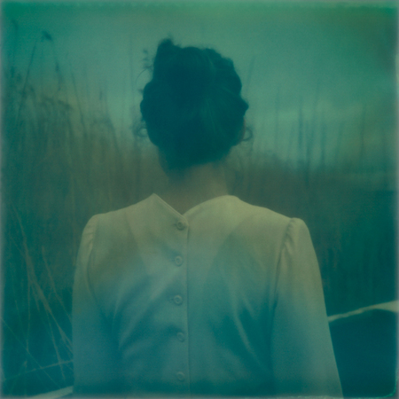
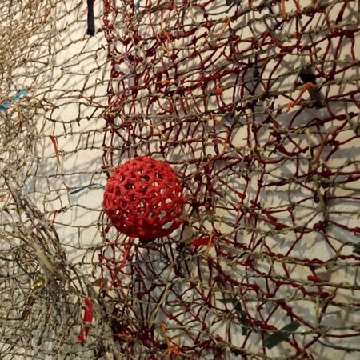
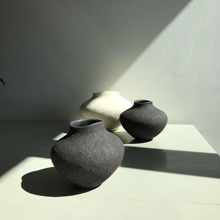

Visit Stockholm in Summer
Summer brings longer and warmer days. Enjoy Stockholm with a day of kayaking adventures or a relaxed drink at a rooftop bar.
Swim in the City
Stockholm’s waterways are not only beautiful to look at, they are so clean and clear that you can take a dip right in the middle of the city.
Enjoy Stockholm from a Boat
A sailboat sails through the waters near Fjäderholmarna.
Spend a Summer Night at a Rooftop Bar
A beautiful view of Stockholm’s rooftops with a hot air balloon floating in the sky. Spend a summer night at a rooftop bar.
Events in Stockholm
Don’t miss the incredible art exhibitions, outings, and adventures that can be experienced in the city.
WESTERLING GALLERY
Danish photographer Astrid Kruse Jensen will present an exhibition titled "Floating" at Westerling Gallery. The Polaroid camera plays with light and darkness to create eerie and intriguing images.
WOO-BOCK LEE GALLERY
Using Hanji, Chiseung, and iron wire coated with paper, he has created intriguing works. Hanji is paper made from mulberry bark, and Chiseung is a traditional Korean technique that uses twisted paper.
ENRIQUETA CEPEDA CERAMIC ART
In this exhibition, Enriqueta Cepeda shows her handcrafted ceramics. The artist uses coil methods in her work, forming organic-looking shapes.
About Stockholm
The beautiful capital of Sweden is known as the "Venice of the North" , as more than 60% of its surface is water and green spaces. The remaining 40% consists of a unique medieval heritage, captured in the old town, and neighborhoods with their own identity.